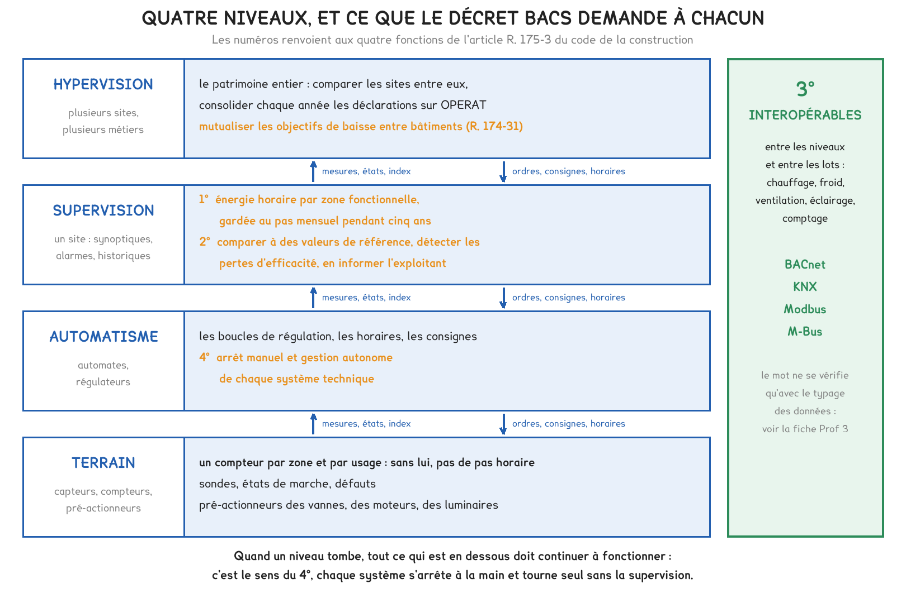
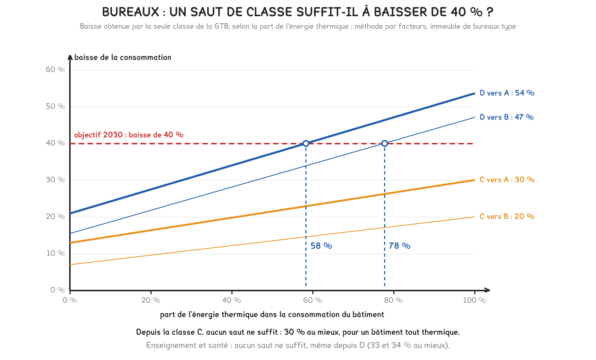

Document de formation du professeur — ne pas diffuser aux étudiants
Formation du professeur · BTS FED option C
Le dispositif Éco Énergie Tertiaire et son objectif de 40 % en 2030, le décret BACS et son report de décembre 2025, les quatre classes de la norme ISO 52120-1, une agence bancaire et une cité scolaire lauréates du concours CUBE, la première inspection obligatoire des GTB. Six cas documentés, et la théorie que chacun oblige à tenir, de l'architecture à la preuve d'une économie.
Savoirs travaillés
Jusqu’en 2019, une gestion technique du bâtiment relevait du seul choix du maître d’ouvrage. Deux décrets en ont fait depuis une affaire de droit. Le premier fixe aux bâtiments tertiaires un résultat, une baisse de 40 % de leur consommation d’énergie finale en 2030 ; le second impose aux plus puissants d’entre eux l’instrument qui permet de constater cette baisse. Les six cas de cette page suivent cet enchaînement, de l’objectif jusqu’au contrôle.
Le fil commun tient en une idée qu’il convient de poser dès la première séance. Le décret tertiaire impose un résultat au bâtiment ; le décret BACS impose au système de mesurer, de comparer et d’alerter. La baisse elle-même vient de décisions d’exploitation, un horaire, une consigne, une dérive repérée puis corrigée, que la GTB rend possibles et durables.
| Cas | Année | Ce qu’il impose ou ce qu’il montre |
|---|---|---|
| Dispositif Éco Énergie Tertiaire | 2019 | un résultat : 40 % de moins en 2030, déclaré chaque année et corrigé du climat |
| Décret BACS | 2020 et 2023 | un instrument : suivi horaire par zone, référence, interopérabilité, arrêt manuel |
| Norme ISO 52120-1 | 2021 | une échelle : quatre classes, et le gain conventionnel de l’une à l’autre |
| Concours CUBE | 2023 et 2025 | une preuve : jusqu’à 78 % d’électricité en moins, sans travaux |
| Première inspection obligatoire | 2025 | un contrôle : ce que l’inspecteur vérifie, tous les cinq ans au plus |
| Décret du 26 décembre 2025 | 2025 | un calendrier : 2030 pour les bâtiments existants de 70 à 290 kW |
Une GTB qui ne mesure pas par zone, ne conserve rien et ne compare à rien ne satisfait ni l’un ni l’autre des deux décrets, quelle que soit la qualité de sa régulation. Le critère d’une GTB conforme est ce qu’elle permet de démontrer.
L’article L. 174-1 du code de la construction et de l’habitation impose de réduire la consommation d’énergie finale des bâtiments tertiaires existants d’au moins 40 % en 2030, 50 % en 2040 et 60 % en 2050. Le décret n° 2019-771 du 23 juillet 2019, entré en vigueur le 1er octobre 2019, en fixe les modalités, aujourd’hui codifiées aux articles R. 174-22 à R. 174-32. Sont concernés les bâtiments, parties de bâtiments ou ensembles situés sur un même site qui accueillent des activités tertiaires sur au moins 1 000 m² de surface de plancher. Les consommations se déclarent chaque année sur la plateforme OPERAT de l’ADEME.
L’objectif peut aussi être atteint en valeur absolue : une consommation fixée par arrêté pour chaque catégorie d’activité, à partir de celle des bâtiments neufs comparables. Des modulations sont admises pour contraintes techniques, architecturales ou patrimoniales, pour un changement d’activité ou pour des coûts manifestement disproportionnés. En cas de défaut, le décret de 2019 prévoyait une mise en demeure, puis une amende administrative plafonnée à 1 500 € pour une personne physique et à 7 500 € pour une personne morale.
La consommation de référence et celles des années suivantes sont ajustées en fonction des variations climatiques (article R. 174-23). La plateforme réalise cet ajustement elle-même, à partir de la station de Météo-France la plus représentative du site et des degrés-jours unifiés moyens de la période 2001-2020. Le principe se démontre en deux lignes, et il convient de l’avoir démontré une fois pour ne plus se tromper de sens.
E corrigée = E autres + E chauffage × DJU moyen / DJU de l’année
Une année douce compte moins de degrés-jours : la correction relève sa consommation. L’arrêté du 10 avril 2020 traite le refroidissement de la même façon, avec des degrés-jours de froid, et estime la part de chauffage par un coefficient lorsqu’elle n’est pas sous-comptée.
Pour aller plus loin
En première approximation, le besoin de chauffage d’un bâtiment est proportionnel aux degrés-jours : E chauffage = k × DJU, où le coefficient k dépend de l’enveloppe, de la ventilation et du rendement de l’installation, mais pas du climat. Le même bâtiment aurait donc consommé, dans un hiver moyen, k × DJU moyen, soit E chauffage × DJU moyen / DJU de l’année. La formule n’est rien d’autre que cette règle de trois.
Exemple chiffré. Un bâtiment consomme 300 MWh de chauffage dans une année à 1 900 DJU, pour une moyenne de 2 300. Ramené à l’hiver moyen, il en aurait consommé 300 × 2 300 / 1 900 = 363,2 MWh. Comparer les 300 MWh bruts à une référence prise dans une année moyenne ferait apparaître une baisse de 1 − 1 900 / 2 300 = 17,4 %, sans qu’aucun réglage ait changé.
Un hiver doux produit une économie apparente, que seule la correction retire. L’inverse est vrai : un hiver rigoureux masque une économie réelle. La proportionnalité suppose des apports internes constants ; la section « Là où la méthode change » en montre la limite.
Elle corrige deux choses : le climat, par les degrés-jours, et le volume d’activité, par des indicateurs d’intensité d’usage propres à chaque catégorie (article R. 174-29). Un établissement qui allonge ses horaires n’est donc pas pénalisé de ce seul fait.
Elle ne corrige pas le reste. Un changement de surface doit être déclaré par l’assujetti lui-même. Surtout, la plateforme ne distingue pas une baisse obtenue par un réglage d’une baisse obtenue par une panne : une chaufferie arrêtée trois semaines en février fait une excellente année sur OPERAT. Seul le suivi horaire de la GTB permet de faire la différence : la déclaration constate un résultat, la GTB en donne l’explication.
En classe. Le cas se prête à la séance DOMA22, qui ouvre le comptage, puis à la séance DOMA25, consacrée à la supervision. La question à poser aux étudiants est la suivante : un bâtiment a consommé 12 % de moins que l’année précédente, l’hiver ayant été plus doux ; peut-on annoncer au gestionnaire une économie de 12 % ? La réponse attendue passe par la part de chauffage et le rapport des degrés-jours, et elle se conclut sur ce que la GTB aurait dû mesurer pour trancher.
Le décret n° 2020-887 du 20 juillet 2020, publié au Journal officiel le lendemain, transpose les articles 8, 14 et 15 de la directive 2010/31/UE sur la performance énergétique des bâtiments. Il crée aux articles R. 175-1 et suivants du code de la construction l’obligation d’équiper d’un système d’automatisation et de contrôle, dit BACS, les bâtiments tertiaires dont le chauffage ou la climatisation dépasse 290 kW de puissance nominale utile. Le décret n° 2023-259 du 7 avril 2023 abaisse le seuil à 70 kW, ajoute une inspection périodique et charge le propriétaire de faire former son exploitant. Le ministère a publié en juin 2025 une foire aux questions qui précise le calcul des puissances.
L’article R. 175-3 exige quatre fonctions, et chacune se loge à un niveau précis de l’architecture. Le suivi horaire par zone fonctionnelle suppose des compteurs sur le terrain, zone par zone et usage par usage ; la conservation et l’analyse relèvent de la supervision ; l’arrêt manuel et la gestion autonome, de l’automatisme ; l’interopérabilité traverse tous les niveaux. Le dernier alinéa de l’article précise que les données produites et archivées appartiennent au propriétaire du système, et non à l’entreprise qui l’exploite.

Côté électricité, le suivi par zone passe le plus souvent par les centrales de mesure du TGBT, départ par départ. C’est le TGBT communicant du cours 1, et c’est ce qui en fait une pièce du dispositif : un tableau dont les départs mélangent plusieurs zones ne permet pas le suivi que le texte demande.
Pour aller plus loin
Le chapitre 14 du manuel de fluides décrit trois niveaux, terrain, automatisme et gestion. Le référentiel en distingue un de plus : il range parmi les constituants d’un système centralisé la « supervision - hyper vision » (B8-1, page 71).
Une supervision sert un site et ses exploitants : synoptiques, alarmes, historiques, action sur les consignes. Une hypervision fédère plusieurs supervisions, plusieurs sites d’un même propriétaire ou plusieurs métiers d’un même site. Elle compare, consolide et hiérarchise ; elle ne commande pas les fonctions de sécurité, qui restent autonomes.
Le décret tertiaire lui donne un marché. L’article R. 174-31 permet de mutualiser les résultats sur un patrimoine : un gestionnaire de quarante bâtiments peut compenser un site difficile par un site où la baisse est facile, à condition de savoir lequel est lequel, avec des consommations corrigées et rapportées au mètre carré. C’est la fonction d’une hypervision, et le référentiel range d’ailleurs les « villes intelligentes » parmi les débouchés du métier (page 8).
P chaud = somme des puissances nominales utiles des générateurs de chaleur du bâtiment
Le seuil s’apprécie bâtiment par bâtiment, d’un côté pour le chaud, de l’autre pour le froid ; les deux ne s’additionnent jamais (foire aux questions BACS n° 08, 09, 11 et 12 du ministère, juin 2025).
Pour aller plus loin
La règle de base. Toutes les puissances de production de chaleur d’un même bâtiment s’additionnent, centralisées ou non, raccordées au même réseau ou non : trois chaudières de 25 kW font 75 kW, et le bâtiment est assujetti, selon l’exemple que donne le ministère lui-même. Pour un bâtiment raccordé à un réseau de chaleur, on retient la puissance de la station d’échange (article R. 175-2, I).
La ligne qui déplace l’échéance de cinq ans. Deux chaudières de 150 kW et huit splits réversibles de 7,1 kW en chaud totalisent 2 × 150 + 8 × 7,1 = 356,8 kW : l’échéance était le 1er janvier 2025. Si la régulation interdit la marche simultanée des chaudières, la seconde est un secours et ne compte pas : 150 + 56,8 = 206,8 kW, soit une échéance au plus tard le 1er janvier 2030. Si elle peut appeler les deux par grand froid, aucune n’est un secours. La même chaufferie change d’échéance selon une ligne de l’analyse fonctionnelle.
Trois erreurs font franchir un seuil à tort : additionner le chaud et le froid, compter les ventilateurs et les pompes, compter une chaudière de secours que la régulation ne peut pas appeler en même temps que l’autre. Une quatrième fait l’inverse et coûte plus cher : déclarer « secours » une chaudière montée en cascade. Elle ne dispense de rien, et l’analyse fonctionnelle la contredit.
En classe. Le cas fournit l’exercice le plus directement utile de la séance DOMA25 : établir l’assujettissement du lycée lui-même, à partir de la liste des générateurs relevée en chaufferie ou obtenue auprès de la collectivité propriétaire. En séance DOMB26, la même grille sert à l’envers : repérer sur le synoptique de l’atelier lesquelles des quatre fonctions de l’article R. 175-3 existent, et lesquelles manquent. La question à poser est simple : où, dans cette installation, se lit l’énergie horaire d’une zone ?
La norme ISO 52120-1, publiée en 2021 et reprise sous la référence EN ISO 52120-1, remplace la norme EN 15232-1 de 2017. Elle évalue la contribution de l’automatisation, de la régulation et de la gestion technique à la performance énergétique d’un bâtiment, classe les fonctions de A, haute performance, à D, non performante, la classe C servant de référence, et propose une méthode par facteurs pour une première estimation. La norme est payante : les facteurs ci-dessous sont relevés sur une source secondaire et recoupés par une seconde. La foire aux questions du ministère s’y réfère pour préciser ce qu’exige le décret BACS.
| Type de bâtiment | Énergie | D | C | B | A |
|---|---|---|---|---|---|
| Bureaux | thermique | 1,51 | 1 | 0,80 | 0,70 |
| Bureaux | électrique | 1,10 | 1 | 0,93 | 0,87 |
| Enseignement | thermique | 1,20 | 1 | 0,88 | 0,80 |
| Enseignement | électrique | 1,07 | 1 | 0,93 | 0,86 |
| Hôpitaux | thermique | 1,31 | 1 | 0,91 | 0,86 |
| Hôpitaux | électrique | 1,05 | 1 | 0,95 | 0,90 |
E après = E avant × f (classe visée) / f (classe actuelle)
Bureaux, de C à B : 20 % de moins en thermique, 7 % en électrique. De C à A : 30 % et 13 %. De D à A : 1 − 0,70 / 1,51 = 53,6 % en thermique.
Le décret BACS n’exige pas une GTB de classe A. Selon la foire aux questions BACS n° 18, un système de classe C convient pour les fonctions de régulation, à condition de satisfaire toutes les exigences du décret ; la gestion des points de consigne doit cependant atteindre la classe B, et la gestion des temps de fonctionnement ainsi que le compte rendu, la classe A. Le texte réclame donc la classe A précisément là où elle coûte le moins : les horaires et le compte rendu.
Pour aller plus loin
Les définitions générales, telles que les résument les sources secondaires, se lisent comme une gradation de l’information dont dispose l’automate.
La lecture utile pour un technicien en domotique est la suivante : chaque classe suppose une information de plus sur le terrain, un horaire en C, une demande de zone en B, une présence en A. Monter d’une classe revient souvent à ajouter des capteurs et des points, avant de modifier des programmes. C’est ce qui relie ce cas au savoir B8-1 : la classe se décide au niveau du terrain.
Un facteur se divise, il ne se soustrait pas. Passer de D à A dans des bureaux fait passer le facteur thermique de 1,51 à 0,70 : la consommation est multipliée par 0,70 / 1,51 = 0,46, soit 53,6 % de moins, et non « 81 % de moins » par différence des facteurs. Et le gain thermique ne s’applique jamais à l’électricité, qui a sa propre ligne.
En classe. En séance DOMA25, le tableau des facteurs sert à estimer le gain d’un changement de classe. En séance DOMB26, la question porte sur la supervision de l’atelier : quelle information de terrain lui manquerait pour monter d’une classe ?
Le concours CUBE, organisé par l’Institut français pour la performance du bâtiment (IFPEB) dans le cadre du Championnat de France des économies d’énergie, oppose des bâtiments dont les équipes réduisent la consommation par l’usage et le réglage. Au palmarès 2023 de CUBE Tertiaire, l’agence BNP Paribas de L’Isle-Adam arrive en tête avec 78,4 % d’électricité en moins, devant un site de La Poste Immobilier à Saint-Dié (63,7 %) ; l’Université Gustave Eiffel remporte la catégorie enseignement avec 26,7 %. En 2025, la déclinaison scolaire CUBE.S, menée avec le Cerema, distingue la cité scolaire Camille Sée, à Paris, avec 23,2 %. L’organisateur annonce une économie moyenne de 16,1 % par an et par bâtiment.
Le palmarès publie un pourcentage, et non les actions qui l’ont produit. L’organisateur décrit, pour l’ensemble des équipes, des mesures de faible coût : un réglage plus fin des chaudières et de l’éclairage pour ne plus chauffer ni éclairer des zones vides, une gestion de l’eau revue en température, en débit et en horaires, des bureaux regroupés, des portes à fermeture automatique. Ce sont des décisions d’exploitation, et elles constituent la matière même d’une GTB : horaires, consignes, zones.
Pour aller plus loin
Le raisonnement suivant ne dit rien des actions réelles de l’agence, que le palmarès ne détaille pas. Il dit ce qu’un chiffre rend plausible, et c’est la compétence attendue d’un technicien devant un résultat annoncé.
Une hypothèse, pour raisonner : une agence ouverte 45 heures par semaine. Les heures de fermeture représentent 1 − 45 / 168 = 73,2 % du temps. Si tout fonctionnait jour et nuit à la même puissance et que l’on arrête tout hors ouverture, la consommation tombe à 26,8 % de sa valeur d’origine. Les seuls horaires plafonnent donc l’économie à 73,2 %.
Pour atteindre 78,4 %, il ne doit rester que 21,6 % de la consommation d’origine, ce qui suppose qu’aux heures d’ouverture la puissance appelée ait aussi baissé : 0,216 × 168 / 45 = 0,806, soit 19,4 % de moins. Un tel résultat signale donc une référence où presque tout fonctionnait en permanence, et des consignes revues en plus des horaires.
La règle générale est à retenir : une économie supérieure à la part des heures inoccupées ne peut pas venir des seuls horaires. Le cours 1 fait le même calcul sur des bureaux, avec 108 heures d’inoccupation par semaine.
Un pourcentage de concours n’est pas le gain d’une GTB. Il mesure l’usage et le réglage, travaux exclus, pendant une année où une équipe est mobilisée. La question de l’exploitant vient ensuite : que reste-t-il de l’économie deux ans plus tard, lorsque l’équipe s’est dispersée ? Une gestion des horaires et des consignes de classe B ou A inscrit dans l’automate ce qu’une équipe avait obtenu par l’attention.
En classe. Le cas s’emploie en séance DOMA22 et en séance DOMB25, où les étudiants relèvent des index : l’exercice consiste à confronter une économie annoncée à la part des heures inoccupées du bâtiment étudié. La saison 2023-2024 de CUBE.S a réuni 215 collèges et lycées pour une économie moyenne de 12,6 % ; le site du concours indiquait, au 13 septembre 2026, des inscriptions ouvertes jusqu’en octobre 2026 pour la saison suivante. Un lycée qui accueille une section de domotique dispose ainsi d’un support réel, mesuré et audité.
Le décret n° 2023-259 a créé l’article R. 175-5-1 : à l’initiative de leur propriétaire, les systèmes d’automatisation et de contrôle sont inspectés périodiquement, et la première inspection devait avoir lieu au plus tard le 1er janvier 2025. L’arrêté du 7 avril 2023 en fixe le contenu : une visite sur site, installation en fonctionnement, des vérifications documentaires, l’évaluation du respect des exigences et du paramétrage, puis des recommandations. Le rapport est remis dans un délai d’un mois et conservé dix ans par le propriétaire. L’intervalle entre deux inspections ne peut dépasser cinq ans ; il est ramené à deux ans après l’installation ou le remplacement du système, ou d’un système technique qui lui est relié.
Deux articles voisins complètent le dispositif. L’article R. 175-4 impose des vérifications périodiques et des consignes écrites fixant la périodicité de l’entretien ; l’article R. 175-5 charge le propriétaire de veiller à ce que l’exploitant soit formé au fonctionnement du système, notamment à son paramétrage. La loi reconnaît ainsi qu’une GTB non paramétrée, ou paramétrée par personne, ne remplit pas sa fonction.
L’inspection vérifie en particulier le 2° de l’article R. 175-3 : détecter les pertes d’efficacité et en informer l’exploitant. Cette exigence crée une seconde famille d’alarmes, qu’il convient de distinguer de la première dès la conception.
| Alarme technique | Alarme de dérive énergétique | |
|---|---|---|
| Ce qu’elle surveille | un état ou un seuil : défaut, marche, température hors plage | un écart à une référence : consommation, durée de marche |
| Signal d’origine | contact sec, seuil sur une mesure analogique | calcul sur des index et des historiques |
| Délai de détection | immédiat, à la temporisation près | une heure, un jour, une semaine |
| Coût de l’attente | un dégât, un inconfort, une plainte | des kilowattheures chaque jour, sans plainte |
| Destinataire | l’astreinte, selon la priorité | l’exploitant, dans son tableau de bord |
Pour aller plus loin
Les priorités et l’astreinte sont traitées dans la séance 21 de fluides ; ce qui suit porte sur le paramétrage, qui relève du savoir B8-2 « alarmes techniques », au niveau 3 dans les trois options.
Seuil et hystérésis. Une alarme de température haute réglée à 28 °C sans hystérésis bat à chaque passage de la mesure autour du seuil ; avec 1 K d’hystérésis, elle apparaît à 28 °C et ne disparaît qu’à 27 °C.
Temporisation. La condition doit persister, par exemple cinq minutes, avant l’émission de l’alarme. Elle est courte ou nulle pour une sécurité, longue pour un écart de confort.
Chien de garde, presque toujours oublié. Un compteur qui ne communique plus ne produit aucune valeur, et une supervision mal réglée affiche la dernière valeur reçue, figée. Le suivi exigé étant continu, il faut une alarme sur l’absence de données, par exemple après trois valeurs horaires manquantes, traitée avant la clôture du mois.
Alarme de dérive. Exemple de règle : signaler toute nuit où la consommation d’une zone, entre 22 h et 6 h, dépasse de 10 % la médiane des quatre semaines précédentes. Elle ne réveille personne ; elle figure au tableau de bord du lundi, et c’est ce que le 2° demande.
L’énergie d’une heure est la différence de deux index relevés à une heure d’intervalle. Échantillonner une puissance une fois par heure ne donne pas la même chose. Une chaudière de 30 kW qui fonctionne vingt minutes par heure consomme 10 kWh chaque heure ; un échantillon horaire de la puissance lit 0 ou 30 kW selon l’instant, et l’historique qui en résulte triple la consommation ou l’ignore, selon le moment de la lecture.
Le volume de données, lui, ne pose aucun problème. Un compteur produit 8 760 valeurs horaires par an. Trente compteurs en produisent 262 800, soit environ 4,2 Mo par an à 16 octets par valeur, et une conservation mensuelle sur cinq ans se réduit à 60 valeurs par compteur. Le coût du décret est dans les compteurs, pas dans le stockage : c’est le nombre de zones fonctionnelles, et donc de points de comptage, qu’il faut chiffrer au devis.
En classe. La séance DOMB26, consacrée au réglage des alarmes, gagne à être construite sur les deux familles du tableau : les étudiants paramètrent une alarme technique avec seuil, hystérésis et temporisation, puis une alarme de dérive sur un index. La séance DOMA26 trouve ici sa justification réglementaire : le dossier d’installation que les étudiants constituent, notice, carnet de câbles et plan de récolement, est celui que l’inspecteur demandera. La notice rejoint en outre la compétence C6, évaluée en situation 2 de l’épreuve E5.
Le décret n° 2025-1343 du 26 décembre 2025, publié au Journal officiel du 27 décembre, remplace l’année 2027 par l’année 2030 au 4° du II de l’article R. 175-2 : les bâtiments tertiaires existants de 70 à 290 kW ont désormais jusqu’au 1er janvier 2030. Le même texte reporte à 2030 d’autres obligations des bâtiments existants, la régulation de la température et le calorifugeage des réseaux. Selon Localtis, le service d’information de la Banque des Territoires, le gouvernement a invoqué un calendrier jugé déconnecté des réalités des collectivités, et l’alignement sur la directive (UE) 2024/1275 du 24 avril 2024, dont l’article 13 fixe au 31 décembre 2029 l’échéance européenne des bâtiments non résidentiels de plus de 70 kW.
L’obligation se déclenche sur une puissance ; l’exemption se calcule sur une consommation. Le II de l’article R. 175-2 dispense le propriétaire qui produit une étude établissant que l’installation n’est pas réalisable avec un temps de retour inférieur à dix ans, et l’arrêté du 7 avril 2023 en fixe le calcul. La rédaction en vigueur écrit cette exemption pour les trois premiers cas du II ; le 4°, celui des bâtiments existants de 70 à 290 kW, ne la reprend pas. C’est la lecture littérale du texte consulté, à confirmer avant de conseiller un propriétaire.
TRI = S / Σ (G × C × p), arrondi à l’année supérieure
L’absence de rentabilité est avérée si le TRI est strictement supérieur à 10 ans.
Pour aller plus loin
Un immeuble de bureaux de 300 kW consomme 400 000 kWh de gaz à 0,09 €/kWh et 120 000 kWh d’électricité à 0,20 €/kWh, soit 36 000 + 24 000 = 60 000 € par an. Le gain conventionnel vaut 15 % × 60 000 = 9 000 € par an. Pour un devis de 60 000 € et 6 000 € d’aides, S = 54 000 € et TRI = 54 000 / 9 000 = 6 ans. L’obligation s’applique.
Un gymnase de 320 kW, chauffé par aérothermes, consomme 150 000 kWh de gaz et 40 000 kWh d’électricité aux mêmes prix, soit 13 500 + 8 000 = 21 500 € par an. Le gain conventionnel vaut 3 225 € par an. Pour un devis de 48 000 € sans aide, TRI = 48 000 / 3 225 = 14,9, arrondi à 15 ans. L’étude établit l’absence de rentabilité.
La puissance décrit ce que le bâtiment peut appeler, la consommation ce qu’il appelle réellement. Les chiffres de cet exemple sont illustratifs ; le calcul est celui de l’arrêté.
La directive 2010/31/UE, dans la version que transpose le décret de 2020, fixait le seuil de 290 kW. Sa refonte, la directive (UE) 2024/1275 du 24 avril 2024, retient dans son article 13 deux échéances pour les bâtiments non résidentiels : le 31 décembre 2024 au-delà de 290 kW, le 31 décembre 2029 au-delà de 70 kW, avec les fonctions de l’article R. 175-3.
Le décret de 2023 avait donc devancé l’Europe de trois ans, et celui de 2025 revient sur l’échéance européenne sans rien retrancher aux exigences. Un report de calendrier ne modifie ni le seuil, ni les fonctions, ni l’objectif de consommation, et le bâtiment qui attend 2030 se prive de plus de trois années de mesures, précisément celles qui précèdent l’évaluation de l’objectif tertiaire.
En classe. La question se pose en séance DOMA25 sous la forme d’une objection de client : « le décret est reporté, rien ne presse ». La réponse attendue distingue les bâtiments concernés par le report de ceux qui ne le sont pas, rappelle que l’objectif de 2030 n’a pas bougé, et chiffre ce qu’une année de mesures en moins coûte pour démontrer une baisse.
Toute la démarche de cette page repose sur une hypothèse : la consommation se sépare en une part qui suit le climat et une part qui n’en dépend pas, et seule la première se corrige. Tant que le chauffage domine, l’erreur commise en corrigeant l’ensemble reste modeste. Elle devient grande dès que la part indépendante du climat l’emporte : bâtiment très isolé, salle informatique, cuisine collective, eau chaude abondante. La correction appliquée au total invente alors une variation qui n’existe pas.
E = a + b × DJU
C’est la signature énergétique du bâtiment. Seul le terme b × DJU se ramène à l’année moyenne ; le terme a ne se corrige pas.
Un bâtiment dont a = 120 MWh et b = 50 kWh par degré-jour consomme 235 MWh dans une année moyenne à 2 300 DJU. Dans une année douce à 1 900 DJU, sans qu’aucun réglage ait changé, il consomme 215 MWh. Les trois traitements possibles conduisent à trois conclusions différentes.
| Traitement de l’année douce | Consommation ramenée à l’année moyenne | Conclusion |
|---|---|---|
| aucune correction | 215,0 MWh | une baisse apparente de 8,5 % |
| rapport des DJU appliqué au total | 215 × 2 300 / 1 900 = 260,3 MWh | une hausse apparente de 10,8 % |
| rapport appliqué au seul terme climatique | 120 + 0,05 × 2 300 = 235,0 MWh | aucune variation, ce qui est exact |
Pour aller plus loin
La construction. On porte chaque mois un point : en abscisse les degrés-jours du mois, en ordonnée la consommation du mois. Les mois d’été, sans degrés-jours, donnent directement la consommation indépendante du climat ; la droite de régression des mois de chauffe donne la pente b, et son ordonnée à l’origine multipliée par douze donne a. Douze index mensuels et les degrés-jours de la station voisine suffisent : c’est un exercice de tableur, et c’est la meilleure façon de faire comprendre aux étudiants ce que la plateforme OPERAT calcule pour eux.
Ce que la signature révèle en plus. Une ordonnée à l’origine élevée désigne un talon, au sens du cours 1 ; une pente qui augmente à enveloppe inchangée, une dérive de régulation.
Le second cas où la méthode change : l’usage. L’année de référence peut être choisie entre 2010 et 2022. Une année de forte occupation donne une référence haute et un objectif plus accessible ; une année d’occupation réduite, une référence basse et un objectif plus difficile. Lorsque l’usage change durablement, la comparaison relative perd son sens : le dispositif prévoit alors la modulation par l’intensité d’usage, ou l’objectif en valeur absolue.
La séance vérifie qu’une installation respecte un texte ; le bureau d’études part de l’objectif et cherche ce qu’il faut installer. Ce qui est fixé : la baisse de 40 % par rapport à l’année de référence, et les facteurs de la norme pour le type de bâtiment. Ce qui est libre : la classe de départ, la classe visée, et la part de l’énergie thermique dans la consommation, qui dépend du bâtiment. La question devient : quel saut de classe tient l’objectif à lui seul ?
r = x × g th + (1 − x) × g él
L’objectif est tenu par la seule GTB si r ≥ 40 %, soit x ≥ (0,40 − g él) / (g th − g él).

Dans des bureaux, le passage de D à A tient l’objectif dès que l’énergie thermique dépasse 58,3 % de la consommation ; le passage de D à B, à partir de 77,8 %. Depuis la classe C, aucun saut ne suffit : le gain plafonne à 30 % pour un bâtiment entièrement thermique. Dans l’enseignement et à l’hôpital, aucun saut ne suffit, même depuis D : 33,3 % et 34,4 % au mieux.
Pour aller plus loin
La démonstration. La consommation de référence se partage en x pour le thermique et 1 − x pour l’électrique. Chaque part est multipliée par son rapport de facteurs ; la baisse totale est la moyenne des deux gains, pondérée par x. Elle varie linéairement de g él, pour un bâtiment tout électrique, à g th, pour un bâtiment tout thermique, d’où les droites de la figure. La condition r ≥ 0,40 se résout en x, et n’a de solution que si g th dépasse 40 %.
L’hypothèse. Le calcul applique les facteurs à toute l’énergie thermique et à toute l’énergie électrique. Une partie de l’électricité, bureautique, informatique, procédés, échappe pourtant à la GTB : le gain réel est plus faible que le gain calculé. La conclusion est donc favorable à la GTB, et la réalité est plus sévère.
Ce qu’il faut ajouter. Les gains se combinent par produit, et non par somme : 1 − (1 − r GTB) × (1 − r autre). Dans des bureaux à 60 % thermiques, le passage de D à B donne 34,4 % ; un gain d’usage de 10 %, de l’ordre de ce que mesure le concours CUBE, porte le total à 1 − 0,656 × 0,90 = 41,0 %. Le gain d’usage minimal est de 8,6 %. Depuis la classe C, le passage à A ne donne que 23,2 %, et il faut trouver 21,9 % ailleurs, par l’usage ou par des travaux.
La GTB est nécessaire pour mesurer et pour maintenir ; elle n’est suffisante que dans un seul cas, celui d’un immeuble de bureaux mal géré, en classe D et majoritairement thermique.
Pour aller plus loin
Énoncé. Un bâtiment d’enseignement existant comporte deux chaudières gaz de 250 kW, dont la régulation interdit la marche simultanée : la seconde ne démarre que sur défaut de la première. Les ateliers sont chauffés par quatre aérothermes électriques de 9 kW. Le froid est assuré par un groupe de 60 kW et par quatorze climatiseurs individuels de 3,5 kW. La centrale de traitement d’air comporte deux ventilateurs de 5,5 kW. Le bâtiment est-il soumis au décret BACS, et à quelle échéance ?
Résolution. Côté chaud, la seconde chaudière est un secours et ne compte pas : 250 + 4 × 9 = 286 kW. Côté froid : 60 + 14 × 3,5 = 109 kW. Les ventilateurs ne comptent pas. Les deux côtés dépassent 70 kW sans dépasser 290 kW : le bâtiment relève du 4° du II de l’article R. 175-2, avec une échéance au renouvellement du système et au plus tard le 1er janvier 2030.
Vérification de plausibilité. Chacune des trois erreurs classiques fait franchir le seuil de 290 kW et avance l’échéance au 1er janvier 2025 : compter la chaudière de secours donne 536 kW, additionner le chaud et le froid donne 395 kW, compter les ventilateurs donne 297 kW. Un résultat au-delà de 290 kW doit donc faire relire chacune de ces trois règles.
Ce que l’étudiant doit rédiger. La règle appliquée, chaque exclusion justifiée, et une conclusion qui nomme l’échéance.
Énoncé. Un gymnase communal existant de 320 kW a consommé 162 000 puis 138 000 kWh de gaz, et 41 000 puis 39 000 kWh d’électricité, au cours des deux dernières années. Les prix moyens facturés cette année sont de 0,095 €/kWh pour le gaz et de 0,21 €/kWh pour l’électricité. Le devis de GTB s’élève à 52 000 €, avec 4 000 € d’aides. La commune peut-elle établir l’absence de rentabilité ?
Résolution. Le bâtiment dépasse 290 kW et relève du 2° du II, qui prévoit l’exemption. Moyennes : 150 000 kWh de gaz et 40 000 kWh d’électricité. Coût annuel : 150 000 × 0,095 + 40 000 × 0,21 = 14 250 + 8 400 = 22 650 €. Gain conventionnel : 15 % × 22 650 = 3 397,50 € par an. Surcoût : 52 000 − 4 000 = 48 000 €. TRI = 48 000 / 3 397,50 = 14,1, arrondi à 15 ans, strictement supérieur à 10 : l’absence de rentabilité est établie.
Deux prolongements. L’obligation reviendrait pour un surcoût d’au plus 10 × 3 397,50 = 33 975 €, soit un devis de 37 975 € avec les mêmes aides. Et si un audit établissait un gain de 25 %, le TRI tomberait à 8,5, arrondi à 9 ans : l’exemption tomberait aussi.
Vérification de plausibilité. 150 000 kWh pour 320 kW représentent 469 heures de fonctionnement à pleine puissance par an, contre plusieurs milliers pour un immeuble de bureaux : c’est le profil d’un bâtiment utilisé par intermittence, celui pour lequel l’exemption a été écrite.
Ce que l’étudiant doit rédiger. La référence de l’arrêté du 7 avril 2023, les deux moyennes, l’arrondi à l’année supérieure et l’inégalité stricte.
Énoncé. Un immeuble de bureaux assujetti au décret tertiaire a choisi 2019 comme année de référence : 620 MWh, dont 380 MWh de chauffage sous-comptés, pour 2 150 DJU. En 2025, il a consommé 540 MWh, dont 290 MWh de chauffage, pour 1 950 DJU. Les degrés-jours moyens de la station valent 2 300. Sa GTB est de classe C. Le gestionnaire annonce une baisse de 12,9 % : que vaut-elle, et la GTB suffit-elle pour 2030 ?
Résolution, en quatre temps.
Vérification de plausibilité. Le chauffage représente 62,9 % de la référence corrigée, ce qui est cohérent avec un immeuble de bureaux chauffé au gaz, et une baisse de 8,4 % sans travaux se situe sous l’économie moyenne annoncée par le concours CUBE. Les 15 % qui manquent après la GTB sont du même ordre ; mais une GTB de classe A capte déjà une partie des gains d’usage, horaires et consignes, et l’enveloppe devient probablement nécessaire.
Ce que l’étudiant doit rédiger. La correction climatique appliquée à la seule part de chauffage, l’objectif exprimé en MWh corrigés, et une conclusion qui distingue ce que la GTB apporte de ce qu’elle ne peut pas apporter. C’est la structure d’une note de conseil, et c’est ce qu’un client attend.
| Grandeur | Valeur |
|---|---|
| BACS, bâtiments existants au-delà de 290 kW | équipés au 1er janvier 2025 |
| BACS, bâtiments existants de 70 à 290 kW | au renouvellement, au plus tard le 1er janvier 2030 |
| Pas de temps du suivi exigé | horaire, par zone fonctionnelle |
| Conservation des données | au pas mensuel, cinq ans |
| Valeurs horaires par compteur et par an | 8 760 |
| Chaud et froid dans le calcul d’assujettissement | jamais additionnés |
| Trois chaudières de 25 kW dans un même bâtiment | 75 kW, donc assujetti |
| Exemption BACS | TRI strictement supérieur à 10 ans, gain conventionnel de 15 % |
| Inspection | tous les cinq ans au plus ; deux ans après une installation ou un remplacement |
| Rapport d’inspection | remis sous un mois, conservé dix ans |
| Décret tertiaire, seuil de surface | 1 000 m² de surface de plancher tertiaire |
| Objectifs de baisse | 40 % en 2030, 50 % en 2040, 60 % en 2050 |
| Année de référence | entre 2010 et 2022 |
| Déclaration sur OPERAT | chaque année avant le 30 septembre, pour l’année précédente |
| Évaluation de l’objectif de 2030 | au 31 décembre 2031 |
| Amendes prévues par le décret de 2019 | 1 500 € pour une personne physique, 7 500 € pour une personne morale |
| Degrés-jours de l’ajustement | moyenne 2001-2020 de la station Météo-France la plus représentative |
| Facteurs thermiques, bureaux | A 0,70 · B 0,80 · C 1 · D 1,51 |
| Facteurs électriques, bureaux | A 0,87 · B 0,93 · C 1 · D 1,10 |
| Gain de C à A, bureaux | 30 % thermique, 13 % électrique |
| Meilleur saut de classe, enseignement | 33 % en thermique, de D à A : jamais 40 % |
| CUBE Tertiaire, économie moyenne | 16,1 % par an et par bâtiment |
| CUBE.S 2023-2024 | 12,6 % en moyenne sur 215 établissements |
| Heures de fermeture, pour 45 heures d’ouverture par semaine | 73,2 % du temps |
Deux réflexes suffisent à trier la plupart des affirmations : une économie non corrigée du climat ne prouve rien, et une GTB seule ne tient jamais l’objectif de 2030 dans un bâtiment d’enseignement. Une valeur annoncée qui contredit l’un des deux mérite qu’on refasse le calcul.
Pour aller plus loin
Le report ne concerne que les bâtiments existants de 70 à 290 kW. Un bâtiment existant de plus de 290 kW devait être équipé au 1er janvier 2025 : s’il ne l’est pas, il n’est pas en avance, il est en retard. Les bâtiments neufs et l’objectif du décret tertiaire ne sont pas touchés.
La réponse chiffrée qui porte est celle des mesures. L’objectif de 2030 s’évalue sur la consommation de l’année 2030, au 31 décembre 2031. Un bâtiment équipé en décembre 2029 abordera cette année sans aucune saison de chauffe mesurée par zone ; un bâtiment équipé à l’automne 2026 en aura trois complètes, soit le temps de repérer une dérive, de la corriger et de vérifier la correction.
La réponse honnête comporte deux nombres. Le premier est conventionnel : dans des bureaux à 60 % thermiques partant de la classe C, la méthode par facteurs donne 14,8 % pour un passage en classe B et 23,2 % pour un passage en classe A. Le second est une condition : ces gains supposent qu’un exploitant règle et surveille. Le concours CUBE montre qu’une équipe attentive obtient 16,1 % en moyenne sans travaux ; une GTB que personne ne consulte n’obtient rien.
La formulation à faire retenir : la GTB ne fait pas l’économie, elle la rend mesurable et durable.
Le 4° de l’article R. 175-3 exige un arrêt manuel et une gestion autonome de chaque système : le chauffage doit continuer de fonctionner sans la supervision, et c’est le premier point à vérifier. En revanche, le 1° exige un suivi en continu, et une panne prolongée crée des trous que l’inspection relèvera.
Le chiffrage dépend de la nature des compteurs. Une semaine de panne représente 168 valeurs horaires perdues par compteur. Un compteur relié par bus transmet son index, et le cours 1 l’a montré : à la reprise, l’index permet de recalculer l’énergie de la semaine entière. La courbe horaire est perdue, la valeur mensuelle conservée cinq ans ne l’est pas. Un comptage par impulsions, lui, perd tout ce qui a été émis pendant une coupure de l’automate qui compte.
Presque certainement, et par les deux. Un lycée héberge une activité tertiaire non marchande : il relève du décret tertiaire dès 1 000 m² de surface de plancher, et du décret BACS dès que son chauffage ou son froid dépasse 70 kW, calculé bâtiment par bâtiment. Le bâtiment de l’exercice 1, à 286 kW, a jusqu’au 1er janvier 2030.
Les assujettis ne sont pas les mêmes. Le décret BACS vise le ou les propriétaires des systèmes de chauffage et de climatisation (article R. 175-2) ; le décret tertiaire vise les propriétaires et, le cas échéant, les preneurs à bail (article R. 174-22). Pour un lycée public, l’interlocuteur est la collectivité qui en a la charge, la région.
Textes réglementaires
Publications des pouvoirs publics
Concours CUBE
Norme ISO 52120-1, sources secondaires (la norme est payante)
Dans le dépôt
Sources consultées le 13 septembre 2026.
Page de formation, réservée au professeur. Elle s'appuie sur des cas réels documentés ; les sources sont données en fin de page.